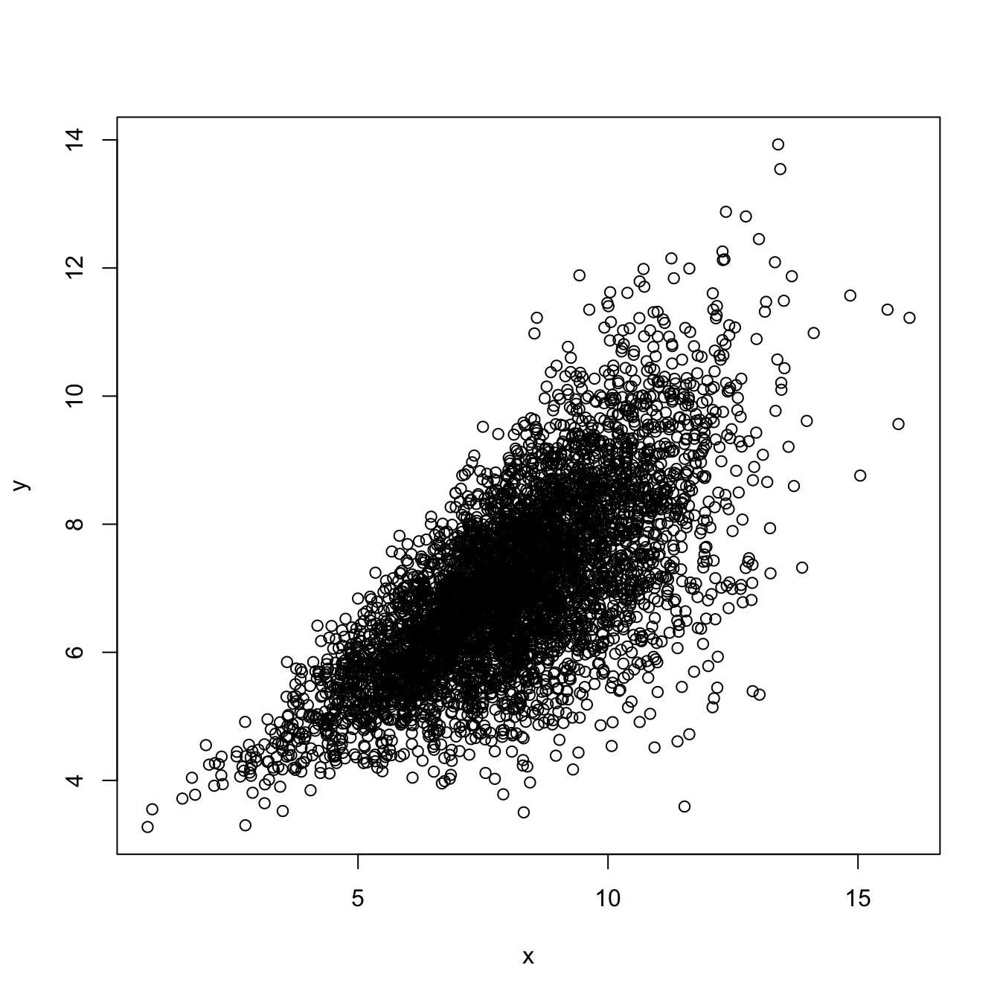
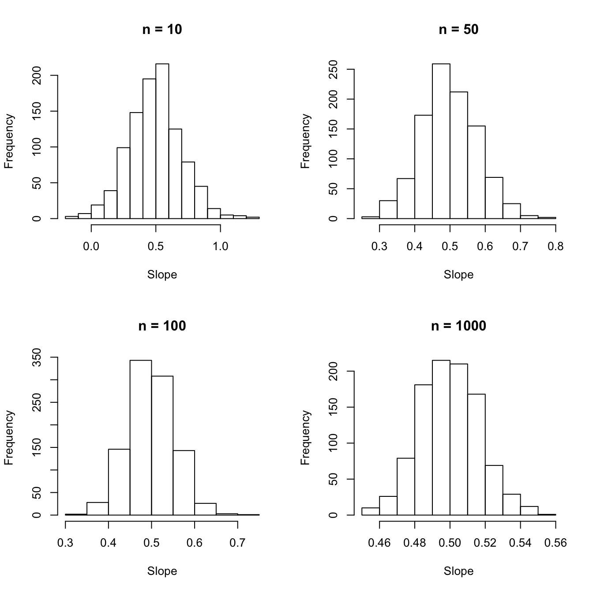
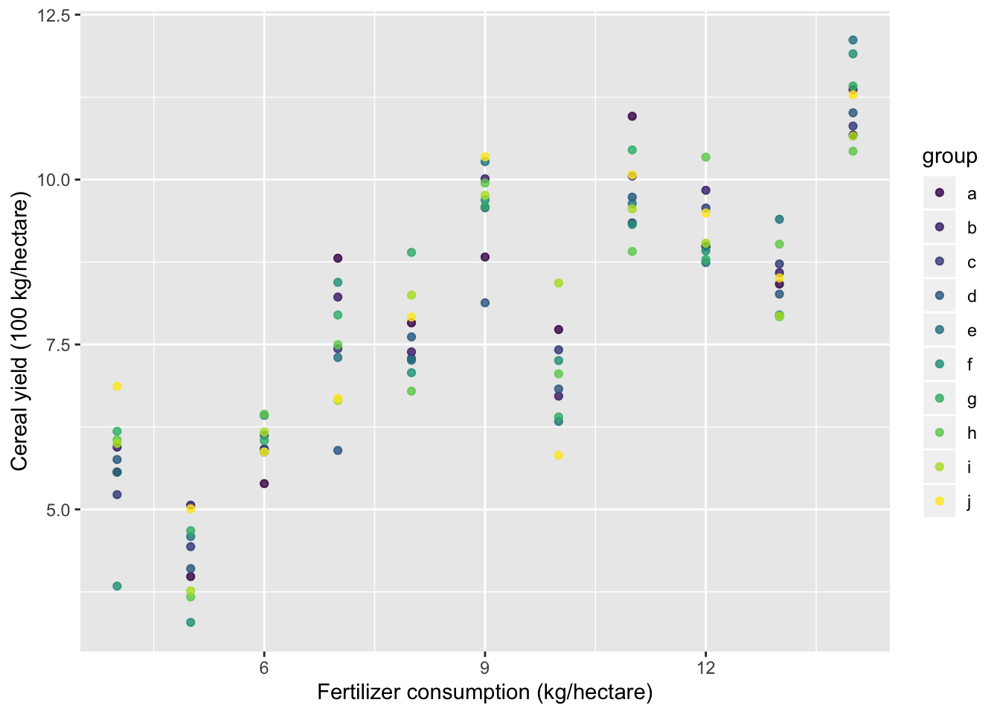

Chapter 11 Postlude: models and data
11.1 Post.1 Evaluating assumptions
Fitting the models:
mod1 <- lm(anscombe$y1 ~ anscombe$x1)
mod2 <- lm(anscombe$y2 ~ anscombe$x2)
mod3 <- lm(anscombe$y3 ~ anscombe$x3)
mod4 <- lm(anscombe$y4 ~ anscombe$x4)
summary(mod1)
summary(mod2)
summary(mod3)
summary(mod4)Plotting the quartet:
x <- anscombe %>%
select(x1:x4) %>%
gather(key = datx, value = x, x1:x4)
y <- anscombe %>%
select(y1:y4) %>%
gather(key = daty, value = y, y1:y4)
d <- cbind(x, y)
d %>%
ggplot(aes(x = x, y = y)) +
geom_point() +
geom_smooth(method = "lm") +
facet_wrap(~ datx)
11.1.1 Exercise set Postlude-1
- Plotting the assumptions from the
lmmodels:


11.1.2 Exercise set Postlude-2
- Applying
gvlmato thelmmodels:
##
## Call:
## lm(formula = anscombe$y1 ~ anscombe$x1)
##
## Coefficients:
## (Intercept) anscombe$x1
## 3.0001 0.5001
##
##
## ASSESSMENT OF THE LINEAR MODEL ASSUMPTIONS
## USING THE GLOBAL TEST ON 4 DEGREES-OF-FREEDOM:
## Level of Significance = 0.05
##
## Call:
## gvlma(x = mod1)
##
## Value p-value Decision
## Global Stat 1.24763 0.8702 Assumptions acceptable.
## Skewness 0.02736 0.8686 Assumptions acceptable.
## Kurtosis 0.26208 0.6087 Assumptions acceptable.
## Link Function 0.68565 0.4076 Assumptions acceptable.
## Heteroscedasticity 0.27255 0.6016 Assumptions acceptable.##
## Call:
## lm(formula = anscombe$y2 ~ anscombe$x2)
##
## Coefficients:
## (Intercept) anscombe$x2
## 3.001 0.500
##
##
## ASSESSMENT OF THE LINEAR MODEL ASSUMPTIONS
## USING THE GLOBAL TEST ON 4 DEGREES-OF-FREEDOM:
## Level of Significance = 0.05
##
## Call:
## gvlma(x = mod2)
##
## Value p-value Decision
## Global Stat 12.17209 0.0161164 Assumptions NOT satisfied!
## Skewness 0.58916 0.4427453 Assumptions acceptable.
## Kurtosis 0.51843 0.4715134 Assumptions acceptable.
## Link Function 10.99998 0.0009111 Assumptions NOT satisfied!
## Heteroscedasticity 0.06453 0.7994766 Assumptions acceptable.##
## Call:
## lm(formula = anscombe$y3 ~ anscombe$x3)
##
## Coefficients:
## (Intercept) anscombe$x3
## 3.0025 0.4997
##
##
## ASSESSMENT OF THE LINEAR MODEL ASSUMPTIONS
## USING THE GLOBAL TEST ON 4 DEGREES-OF-FREEDOM:
## Level of Significance = 0.05
##
## Call:
## gvlma(x = mod3)
##
## Value p-value Decision
## Global Stat 16.9134 0.002009 Assumptions NOT satisfied!
## Skewness 7.6349 0.005725 Assumptions NOT satisfied!
## Kurtosis 5.8431 0.015638 Assumptions NOT satisfied!
## Link Function 0.6055 0.436470 Assumptions acceptable.
## Heteroscedasticity 2.8297 0.092533 Assumptions acceptable.##
## Call:
## lm(formula = anscombe$y4 ~ anscombe$x4)
##
## Coefficients:
## (Intercept) anscombe$x4
## 3.0017 0.4999
##
##
## ASSESSMENT OF THE LINEAR MODEL ASSUMPTIONS
## USING THE GLOBAL TEST ON 4 DEGREES-OF-FREEDOM:
## Level of Significance = 0.05
##
## Call:
## gvlma(x = mod4)
##
## Value p-value Decision
## Global Stat 5.919e-01 0.9640 Assumptions acceptable.
## Skewness 1.724e-04 0.9895 Assumptions acceptable.
## Kurtosis 5.242e-01 0.4691 Assumptions acceptable.
## Link Function -2.037e-16 1.0000 Assumptions acceptable.
## Heteroscedasticity 6.750e-02 0.7950 Assumptions acceptable.11.2 Post.2 Some extensions of simple linear regression
11.2.1 Multiple regression
11.2.2 Exercise set Postlude-3
- First, a multiple regression of mpg vs transmission (0 = automatic; 1 = manual)
- Next, we extract the residuals after fitting two models:
- transmission ~ horsepower
- mpg ~ horsepower
And then fit a model of the residuals:
resid.am.hp <- lm(am ~ hp, data = mtcars)$residuals
resid.mpg.hp <- lm(mpg ~ hp, data = mtcars)$residuals
m2 <- lm(resid.mpg.hp ~ resid.am.hp)Now compare the coefficient for transmission type:
## Estimate Std. Error t value Pr(>|t|)
## (Intercept) 26.5849137 1.425094292 18.654845 1.073954e-17
## am 5.2770853 1.079540576 4.888270 3.460318e-05
## hp -0.0588878 0.007856745 -7.495191 2.920375e-08## Estimate Std. Error t value Pr(>|t|)
## (Intercept) -3.925231e-17 0.5056342 -7.762986e-17 1.000000e+00
## resid.am.hp 5.277085e+00 1.0613957 4.971836e+00 2.522476e-05Plot the variables:
par(mfrow = c(2,2))
plot(mpg ~ am, data = mtcars)
plot(mpg ~ hp, data = mtcars)
plot(am ~ hp, data = mtcars)
plot(resid.mpg.hp ~ resid.am.hp)
- To get the estimated slope of horsepower using only simple linear regression:
resid.hp.am <- lm(hp ~ am, data = mtcars)$residuals
resid.mpg.am <- lm(mpg ~ am, data = mtcars)$residuals
m3 <- lm(resid.mpg.am ~ resid.hp.am)Now compare the coefficient for transmission type:
## Estimate Std. Error t value Pr(>|t|)
## (Intercept) 26.5849137 1.425094292 18.654845 1.073954e-17
## am 5.2770853 1.079540576 4.888270 3.460318e-05
## hp -0.0588878 0.007856745 -7.495191 2.920375e-08## Estimate Std. Error t value Pr(>|t|)
## (Intercept) -1.985302e-16 0.505634181 -3.926359e-16 1.000000e+00
## resid.hp.am -5.888780e-02 0.007724689 -7.623324e+00 1.676672e-08## [1] 26.57207- Comparing
lmwith other tests
- T-test
##
## Two Sample t-test
##
## data: mtcars$mpg by mtcars$am
## t = -4.1061, df = 30, p-value = 0.000285
## alternative hypothesis: true difference in means is not equal to 0
## 95 percent confidence interval:
## -10.84837 -3.64151
## sample estimates:
## mean in group 0 mean in group 1
## 17.14737 24.39231##
## Call:
## lm(formula = mtcars$mpg ~ mtcars$am)
##
## Residuals:
## Min 1Q Median 3Q Max
## -9.3923 -3.0923 -0.2974 3.2439 9.5077
##
## Coefficients:
## Estimate Std. Error t value Pr(>|t|)
## (Intercept) 17.147 1.125 15.247 1.13e-15 ***
## mtcars$am 7.245 1.764 4.106 0.000285 ***
## ---
## Signif. codes: 0 '***' 0.001 '**' 0.01 '*' 0.05 '.' 0.1 ' ' 1
##
## Residual standard error: 4.902 on 30 degrees of freedom
## Multiple R-squared: 0.3598, Adjusted R-squared: 0.3385
## F-statistic: 16.86 on 1 and 30 DF, p-value: 0.000285- Correlation
##
## Pearson's product-moment correlation
##
## data: anscombe$x1 and anscombe$y1
## t = 4.2415, df = 9, p-value = 0.00217
## alternative hypothesis: true correlation is not equal to 0
## 95 percent confidence interval:
## 0.4243912 0.9506933
## sample estimates:
## cor
## 0.8164205##
## Call:
## lm(formula = anscombe$y1 ~ anscombe$x1)
##
## Residuals:
## Min 1Q Median 3Q Max
## -1.92127 -0.45577 -0.04136 0.70941 1.83882
##
## Coefficients:
## Estimate Std. Error t value Pr(>|t|)
## (Intercept) 3.0001 1.1247 2.667 0.02573 *
## anscombe$x1 0.5001 0.1179 4.241 0.00217 **
## ---
## Signif. codes: 0 '***' 0.001 '**' 0.01 '*' 0.05 '.' 0.1 ' ' 1
##
## Residual standard error: 1.237 on 9 degrees of freedom
## Multiple R-squared: 0.6665, Adjusted R-squared: 0.6295
## F-statistic: 17.99 on 1 and 9 DF, p-value: 0.00217- ANOVA
## Df Sum Sq Mean Sq F value Pr(>F)
## group 2 3.766 1.8832 4.846 0.0159 *
## Residuals 27 10.492 0.3886
## ---
## Signif. codes: 0 '***' 0.001 '**' 0.01 '*' 0.05 '.' 0.1 ' ' 1##
## Call:
## lm(formula = weight ~ group, data = PlantGrowth)
##
## Residuals:
## Min 1Q Median 3Q Max
## -1.0710 -0.4180 -0.0060 0.2627 1.3690
##
## Coefficients:
## Estimate Std. Error t value Pr(>|t|)
## (Intercept) 5.0320 0.1971 25.527 <2e-16 ***
## grouptrt1 -0.3710 0.2788 -1.331 0.1944
## grouptrt2 0.4940 0.2788 1.772 0.0877 .
## ---
## Signif. codes: 0 '***' 0.001 '**' 0.01 '*' 0.05 '.' 0.1 ' ' 1
##
## Residual standard error: 0.6234 on 27 degrees of freedom
## Multiple R-squared: 0.2641, Adjusted R-squared: 0.2096
## F-statistic: 4.846 on 2 and 27 DF, p-value: 0.0159111.2.3 Generalized linear models
11.2.4 Exercise set Postlude-4
library(car)
probit.fit <- glm(volunteer ~ extraversion + neuroticism + sex,
data = Cowles, family = binomial("probit"))
summary(probit.fit)##
## Call:
## glm(formula = volunteer ~ extraversion + neuroticism + sex, family = binomial("probit"),
## data = Cowles)
##
## Deviance Residuals:
## Min 1Q Median 3Q Max
## -1.3947 -1.0468 -0.9091 1.2611 1.6901
##
## Coefficients:
## Estimate Std. Error z value Pr(>|z|)
## (Intercept) -0.692584 0.153670 -4.507 6.58e-06 ***
## extraversion 0.040934 0.008790 4.657 3.21e-06 ***
## neuroticism 0.004104 0.007044 0.583 0.5601
## sexmale -0.145677 0.068957 -2.113 0.0346 *
## ---
## Signif. codes: 0 '***' 0.001 '**' 0.01 '*' 0.05 '.' 0.1 ' ' 1
##
## (Dispersion parameter for binomial family taken to be 1)
##
## Null deviance: 1933.5 on 1420 degrees of freedom
## Residual deviance: 1906.1 on 1417 degrees of freedom
## AIC: 1914.1
##
## Number of Fisher Scoring iterations: 4
par(mfrow = c(2,2))
ests <- sim.lm.ests(n = 10, nsim = 1000, a = 3, b = 1/2, het.coef = 0.25)
colMeans(ests)## [1] 3.048717 0.492909## [1] 2.33058271 0.04227503hist(ests[,2], main = "n = 10", xlab = "Slope")
ests <- sim.lm.ests(n = 50, nsim = 1000, a = 3, b = 1/2, het.coef = 0.25)
colMeans(ests)## [1] 3.0191249 0.4969704## [1] 0.337768664 0.006242319hist(ests[,2], main = "n = 50", xlab = "Slope")
ests <- sim.lm.ests(n = 100, nsim = 1000, a = 3, b = 1/2, het.coef = 0.25)
colMeans(ests)## [1] 3.0044014 0.4995332## [1] 0.156064713 0.002956491hist(ests[,2], main = "n = 100", xlab = "Slope")
ests <- sim.lm.ests(n = 1000, nsim = 1000, a = 3, b = 1/2, het.coef = 0.25)
colMeans(ests)## [1] 3.0013893 0.4997909## [1] 0.0159777401 0.0002886682
11.2.5 Mixed models
set.seed(8675309)
alpha <- 3
beta <- 0.5
eps.sd <- sqrt(0.5)
re.sd <- 1
yrs <- 10
x <- rep(anscombe$x1, 10)
rand.ints <- rnorm(length(anscombe$x1), 0, re.sd)
y <- alpha + beta*x + rep(rand.ints, 10) + rnorm(length(x), 0, eps.sd)
d <- tibble(x = x, y = y, j = rep(1:10, each = 11)) %>%
mutate(group = letters[j])d %>%
ggplot(aes(x, y, color = group)) +
geom_point(alpha = 0.8) +
scale_color_viridis_d() +
labs(x = "Fertilizer consumption (kg/hectare)",
y = "Cereal yield (100 kg/hectare)")
Here’s the linear model:
##
## Call:
## lm(formula = y ~ x, data = d)
##
## Residuals:
## Min 1Q Median 3Q Max
## -2.56402 -0.84873 0.05249 0.81626 2.49028
##
## Coefficients:
## Estimate Std. Error t value Pr(>|t|)
## (Intercept) 3.11366 0.34591 9.001 8.63e-15 ***
## x 0.52696 0.03626 14.532 < 2e-16 ***
## ---
## Signif. codes: 0 '***' 0.001 '**' 0.01 '*' 0.05 '.' 0.1 ' ' 1
##
## Residual standard error: 1.203 on 108 degrees of freedom
## Multiple R-squared: 0.6616, Adjusted R-squared: 0.6585
## F-statistic: 211.2 on 1 and 108 DF, p-value: < 2.2e-16Here’s a mixed-effects model fit using lmer:
## Linear mixed model fit by REML ['lmerMod']
## Formula: y ~ x + (1 | group)
## Data: d
##
## REML criterion at convergence: 358
##
## Scaled residuals:
## Min 1Q Median 3Q Max
## -2.13200 -0.70572 0.04365 0.67872 2.07068
##
## Random effects:
## Groups Name Variance Std.Dev.
## group (Intercept) 0.000 0.000
## Residual 1.446 1.203
## Number of obs: 110, groups: group, 10
##
## Fixed effects:
## Estimate Std. Error t value
## (Intercept) 3.11366 0.34591 9.001
## x 0.52696 0.03626 14.532
##
## Correlation of Fixed Effects:
## (Intr)
## x -0.943## Linear mixed-effects model fit by REML
## Data: d
## AIC BIC logLik
## 366.0498 376.7783 -179.0249
##
## Random effects:
## Formula: ~1 | group
## (Intercept) Residual
## StdDev: 3.182308e-05 1.202637
##
## Fixed effects: y ~ x
## Value Std.Error DF t-value p-value
## (Intercept) 3.1136600 0.3459065 99 9.001449 0
## x 0.5269571 0.0362609 99 14.532394 0
## Correlation:
## (Intr)
## x -0.943
##
## Standardized Within-Group Residuals:
## Min Q1 Med Q3 Max
## -2.13200120 -0.70572491 0.04364566 0.67872464 2.07068222
##
## Number of Observations: 110
## Number of Groups: 10